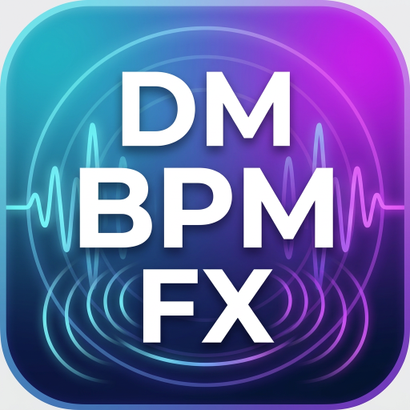

DM BPM FX
Calculadora de delay, reverb time, pre-delay e modulação sincronizados com o BPM.
Tempo de 1 semínima
500 ms
Resumo
Normal
Pre-delay sugerido
63 ms
Bom para separar a fonte do reverb.
Reverb time
1,00 s
Reverb médio e musical.
Modulação principal
0,500 Hz
Ciclo de 2000 ms.
Delay recomendado
375 ms
Valor útil para grooves musicais.
Delay
ms| Nota | Nome | Tempo | Hz |
|---|
Dica: delays pontuados funcionam muito bem em synths, guitarras e vozes. Delays tercinados dão uma sensação mais swingada ou orgânica.
Modulação
LFO| Divisão | Uso | Ciclo | Frequência |
|---|
Usa valores lentos para chorus, phaser e movimento subtil. Usa valores rápidos para tremolo, autopan e efeitos rítmicos.